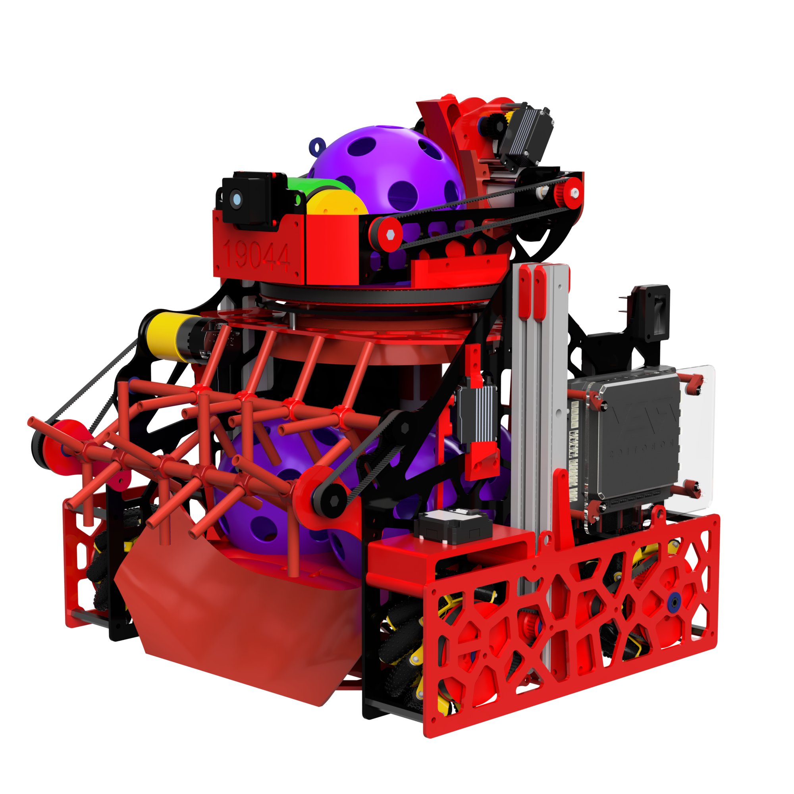

➤ The mechanism allows artifacts to be positioned in storage in three predetermined positions in order to sort them.
➤ It ensures their sorting through three color sensors, which transmit information to three latches, deciding which artifact to release.
➤ It is powered by three servo motors for speed and precision.